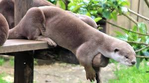

zone géographique : toute l'Europe et l'Asie, de l'Irlande au Japon ainsi que sur l'Afrique du Nord
Lieu de vie: les fleuves, les rivières aux cours lents à rapides, les torrents ou encore les canaux.
Alimentation: Carnivore
Longévité : 5 ans
Famille: mustélidés
Taille : 57 – 95 cm
mode de vie : La loutre vit à la fois en milieu aquatique et en milieu terrestre.
comportement : Très discrète et silencieuse le reste de l'année, la loutre émet des sifflements au printemps
notamment quand mâles et femelles se rencontrent et s'apparient ou quand la mère communique avec ses petits.